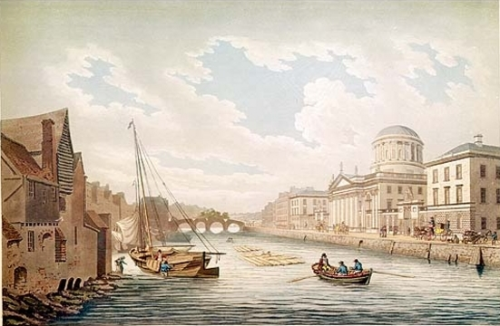
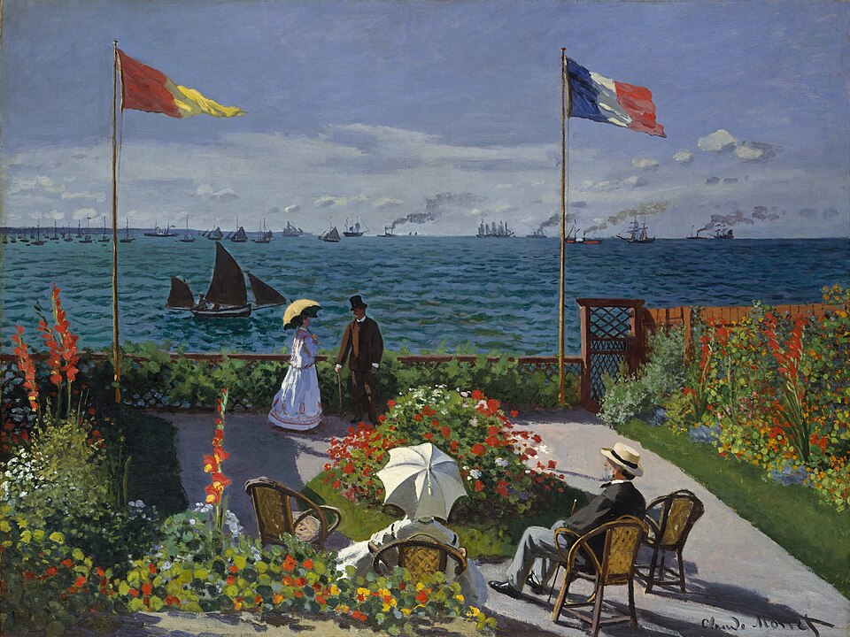
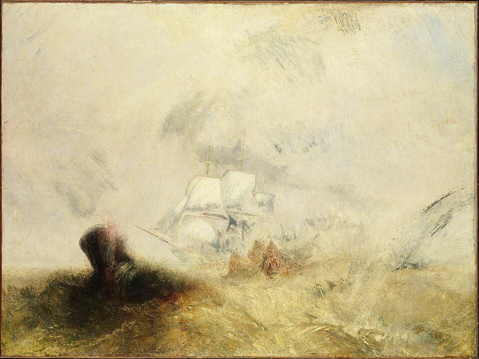
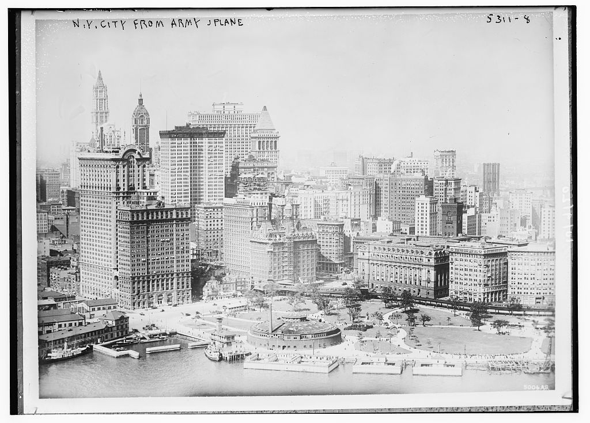

THE CATALOGUE
Every book,
a world to explore.
Choose a novel and discover the places in its story.

DUBLINUlysses
Stephen, Leopold and Molly. Explore Dublin through the novel’s eighteen episodes.
Explore the maps
FRANCE / VENICE / PADUAIn Search of Lost Time
Seven volumes, from Combray and Balbec to Paris, Venice and Padua.
Explore the mapsRUSSIA / AUSTRIA / MORAVIA
War and Peace
From family life in Russia to Austerlitz, Borodino and the retreat of 1812.
Explore the maps
ATLANTIC / INDIAN OCEAN / PACIFICMoby-Dick
135 chapters and an epilogue: follow the voyage and the settings of narrated events.
Explore the maps
LONG ISLAND / NEW YORKThe Great Gatsby
Nine chapters, from the shores of Long Island to the streets of Jazz Age Manhattan.
Explore the maps